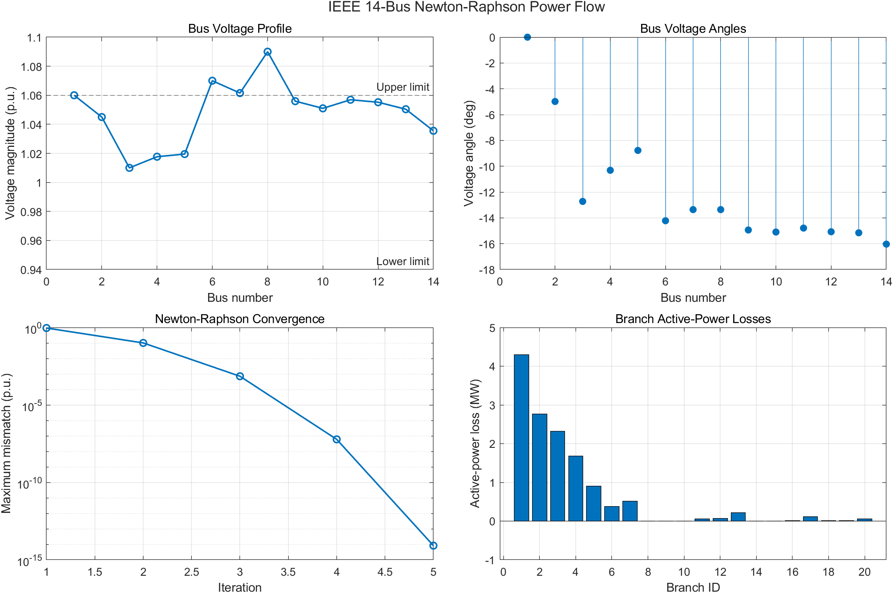

Newton-Raphson Power Flow Report
Independent MATLAB implementation using Excel input data.
Summary
- Converged: true
- Iterations: 5
- Final mismatch: 8.216e-15 p.u.
- Total active-power loss: 13.3933 MW
- Voltage alerts: 3

Bus Results
| Bus | Type | V (p.u.) | Angle (deg) | Pg (MW) | Qg (Mvar) | Status |
|---|
| 1 | SLACK | 1.06000 | 0.0000 | 232.3933 | -16.5493 | OK |
| 2 | PV | 1.04500 | -4.9826 | 40.0000 | 43.5571 | OK |
| 3 | PV | 1.01000 | -12.7251 | 0.0000 | 25.0753 | OK |
| 4 | PQ | 1.01767 | -10.3129 | -0.0000 | -0.0000 | OK |
| 5 | PQ | 1.01951 | -8.7739 | 0.0000 | 0.0000 | OK |
| 6 | PV | 1.07000 | -14.2209 | 0.0000 | 12.7309 | HIGH |
| 7 | PQ | 1.06152 | -13.3596 | 0.0000 | -0.0000 | HIGH |
| 8 | PV | 1.09000 | -13.3596 | 0.0000 | 17.6235 | HIGH |
| 9 | PQ | 1.05593 | -14.9385 | -0.0000 | 0.0000 | OK |
| 10 | PQ | 1.05098 | -15.0973 | -0.0000 | -0.0000 | OK |
| 11 | PQ | 1.05691 | -14.7906 | -0.0000 | -0.0000 | OK |
| 12 | PQ | 1.05519 | -15.0756 | -0.0000 | -0.0000 | OK |
| 13 | PQ | 1.05038 | -15.1563 | -0.0000 | -0.0000 | OK |
| 14 | PQ | 1.03553 | -16.0336 | 0.0000 | 0.0000 | OK |
Voltage Alerts
| Bus | Voltage (p.u.) | Status |
|---|
| 6 | 1.07000 | HIGH |
| 7 | 1.06152 | HIGH |
| 8 | 1.09000 | HIGH |
Largest Branch Losses
| Branch | From | To | P loss (MW) | Q loss (Mvar) |
|---|
| 1 | 1 | 2 | 4.29760 | 7.27196 |
| 2 | 1 | 5 | 2.76287 | 6.08435 |
| 3 | 2 | 3 | 2.32327 | 5.16244 |
| 4 | 2 | 4 | 1.67666 | 1.47034 |
| 5 | 2 | 5 | 0.90375 | -0.92804 |
| 7 | 4 | 5 | 0.51442 | 1.62264 |
| 6 | 3 | 4 | 0.37344 | -0.36254 |
| 13 | 6 | 13 | 0.21209 | 0.41766 |